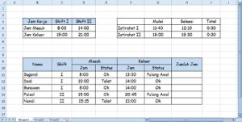
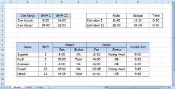
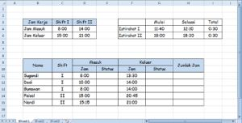

Menghitung jam kerja dan lembur
Selisih dua jam dihitung dengan pengurangan lalu dikalikan 24 untuk mendapat jam desimal.
=(jam_pulang - jam_masuk) * 24
Langkah praktik
- Ketik jam masuk dan jam pulang dalam format 08:00 dan 17:00.
- Selisih: =C2-B2 dengan format [h]:mm.
- Dalam jam desimal: =(C2-B2)*24.
- Lembur: =MAX(0;(C2-B2)*24-8) bila jam normal 8 jam.
Tangkapan layar praktik


